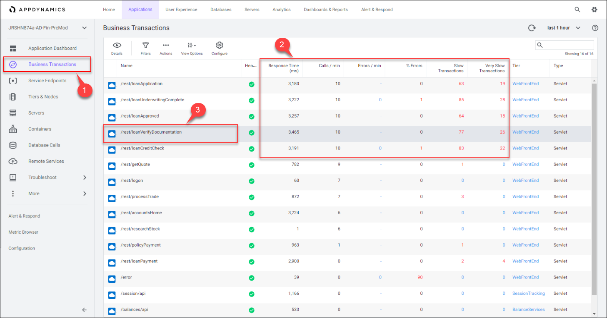
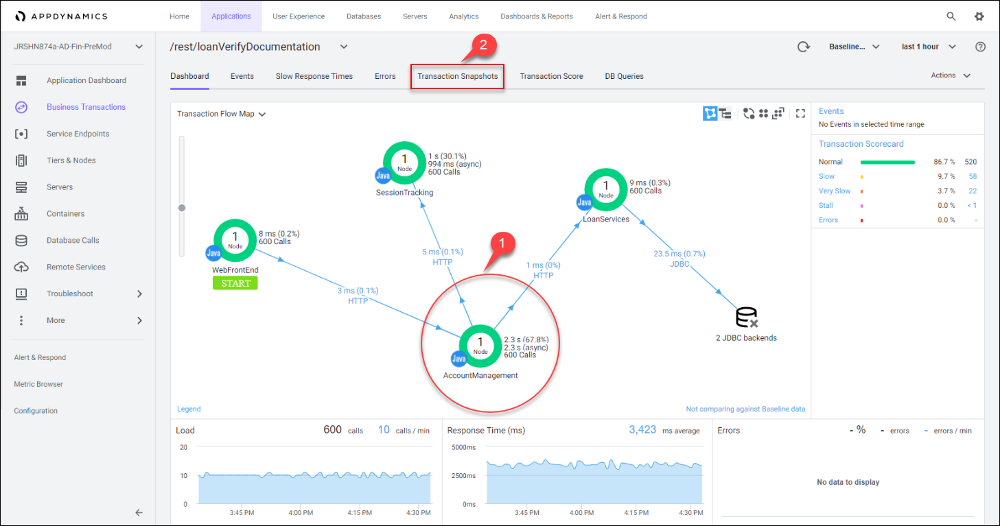
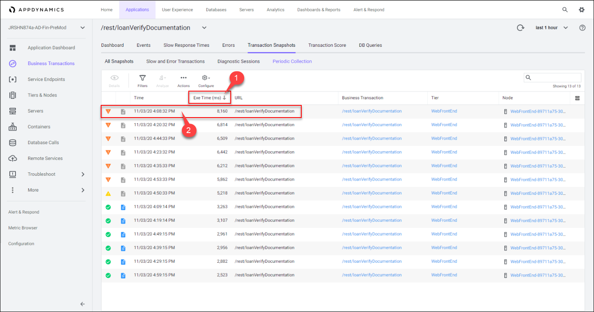
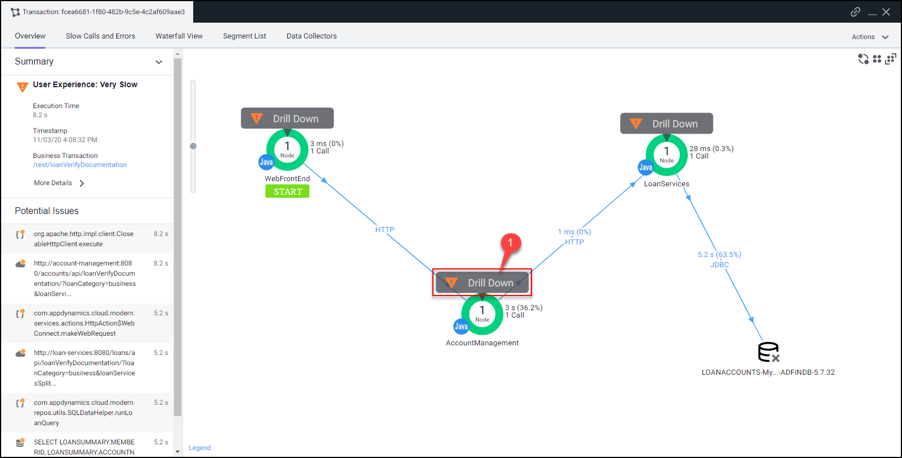
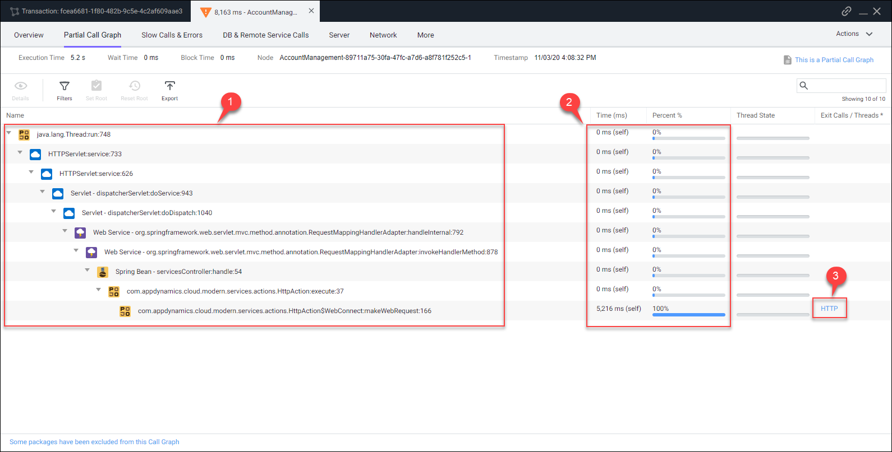
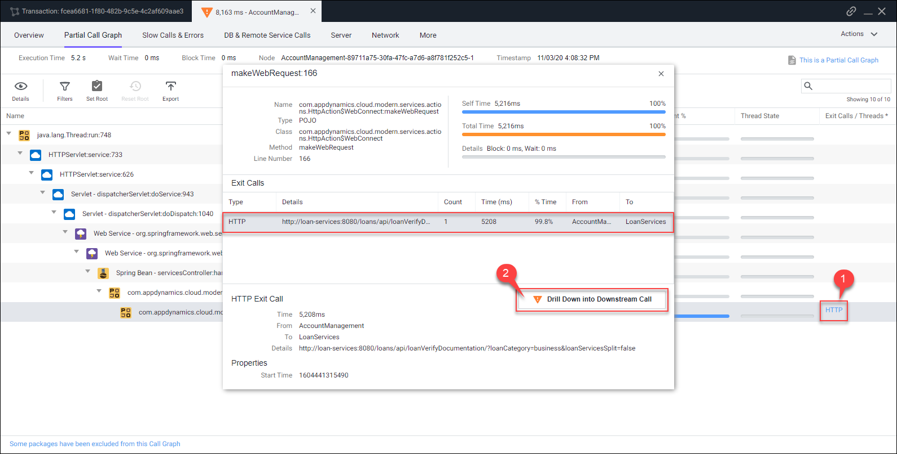
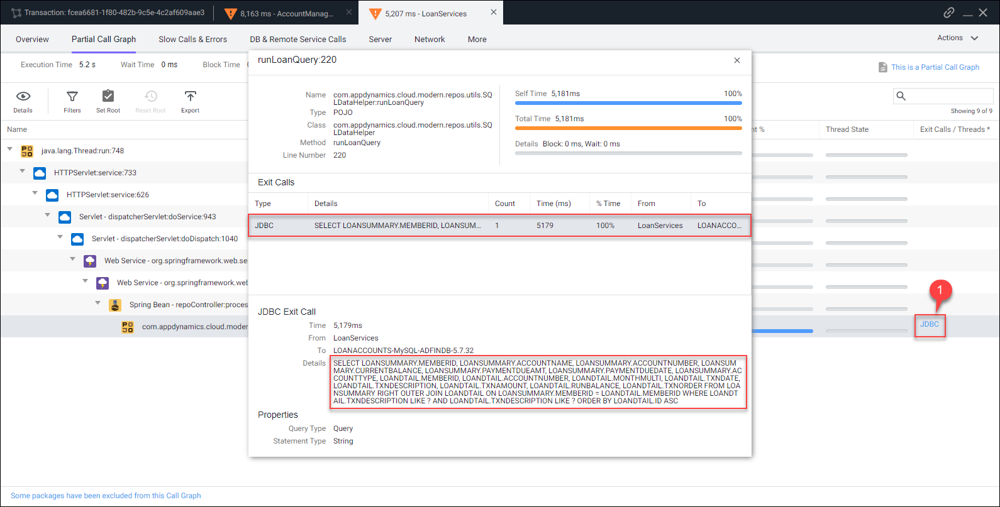
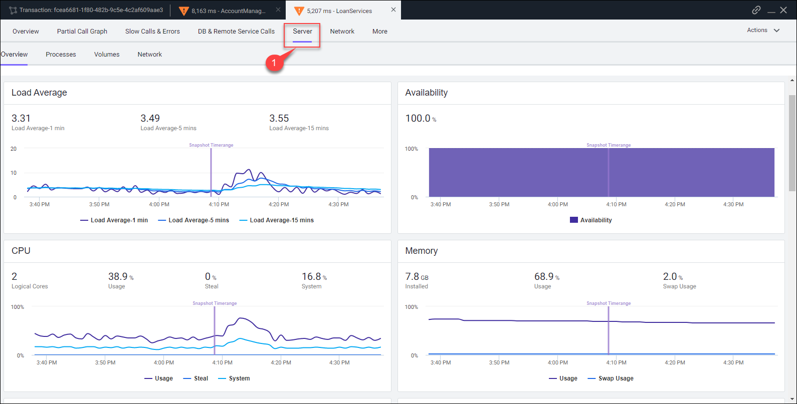

In AppDynamics a business transaction represents the data processing flow for a request, most often a user request. In real-world terms, many different components and dependencies in your application may interact to provide services to fulfill the following types of requests:
AppDynamics orients performance monitoring around business transactions so you can focus on the performance of your application components from the end user perspective. You can quickly identify whether a component is readily available or if it is having performance issues. For instance, you can check whether users are able to log in, check out or view their data. You can see response times for users, and the causes of problems when they occur.
Let’s look at the performance of the key Business Transactions to identify and prioritize the ones that need refactoring by following the steps below.
1 . Click on the Business Transactions option on the left menu.
2 . Notice the business transactions that have the highest response times.
3 . Double-click on the /rest/loanVerifyDocumentation business transaction to get more detail about this transaction with high response times.
Notice that five business transactions related to servicing loans are suffering with performance problems. This is key to understanding where we need to focus our efforts during our modernization effort.

Once you’re in the Business Transaction level Flow Map, you can see that the view has changed to show only the related components and aspects of the /rest/loanVerifyDocumentation business transaction.
1 . Notice that the AccountManagement Tier is showing the greatest amount of time spent within this business transaction.
2 . Click on the Transaction Snapshots tab to look at specific instances where this transaction was slow.
You can read more about Business Transactions here.

AppDynamics monitors and records every execution of a business transaction in the instrumented environment. However, for troubleshooting purposes, AppDynamics takes snapshots (containing deep diagnostic information) of specific instances of transactions that are having problems.
1 . Click on the Exe Time (ms) column to sort the snapshots by the highest execution time.
2 . Double-click on the Transaction Snapshot instance that has the highest execution time.

When the transaction snapshot viewer opens, you will see the flow map view of all the components that were part of this specific transaction.
This snapshot shows the transaction traversed through the components below in order.
1 . Click on the Drill Down button on the AccountManagement Tier shown on the Flow Map of the snapshot

The call graph view shows you the following details:
1 . The method execution sequence shows the names of the classes and methods that participated in processing the business transaction on this node, in the order in which the flow of control proceeded.
2 . For each method, you can see the time and percentage spent processing and the line number in the source code, enabling you to pinpoint the location in the code that could be affecting the performance of the transaction.
3 . The call graph displays exit call links for methods that make outbound calls to other components such as database queries and web service calls.
You can read more about Call Graphs here.

1 . Click on the HTTP link to open the detail panel for the downstream call.
2 . Click on the Drill Down into Downstream Call button.

The tab that opens shows the call graph of the LoanServices Tier. You can see that there was a JDBC call to the database that caused issues with the transaction.
1 . Click on the JDBC link on the right to open the detail panel for the JDBC database call.
The detail panel for the JDBC database call shows the specific query that took most of the time.
SQL Parameter Capture is turned off by default but can be turned on.

We can also confirm if there were resource issues on the host that could have impacted the transaction performance.
1 . Click on the Server tab to see the resource usage within the context of the transaction.
You can read more about Transaction Snapshots here. You can read more about troubleshooting slow transactions here.

In the next section we’ll look at the level of detail AppDynamics provides for Servers and the Containers running on them.